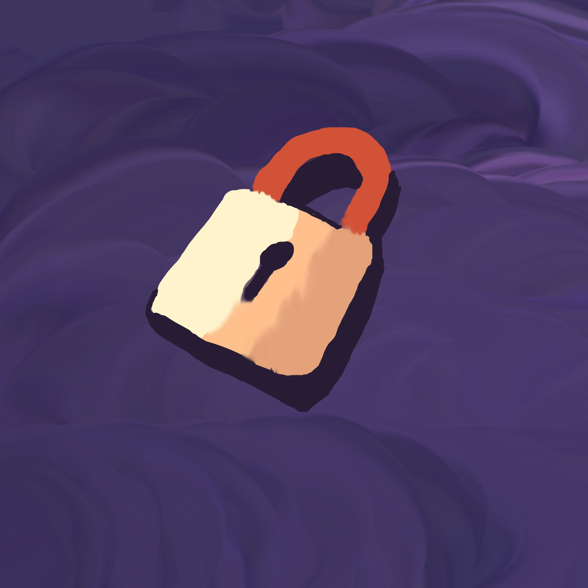

Coding
Megan Mida
 Designed by Megan Mida
Introduction
Around 16.7 million people each year experience their personal information being stolen on the internet. Hackers- a person who uses computers to gain unauthorized access to data- are the ones stealing this information.
what could happen if your information gets stolen or hacked
Some hackers want to break into your systems so that they can store data and host applications on your infrastructure, instead of paying for their own. With the social media that is available today, hackers can easily find your personally identifiable information, financial information and healthcare information. On the other hand, if your computer is infected by a virus or malware, not only can hackers dig through your data to steal your identity, but they may lock up your files and ask for a ransom to get them back.
Ways to protect your information
- Password protect everything : Don't use the same password for more than one site, that includes your computers, tablets, smartphones and anything other gadgets with personal data on them.
- Secure your browser : The first step for keeping advertisers out of your browser is turning off third-party cookies. Advertisers use cookies to see where you've been and tailor the ads they show you appropriately
- Be careful what you share on social media : The information you share can be used to track where you are and what you're up to, so Share only with the people you want to see the information you're sharing, like your friends and family. You also need to be choosy about what you share. Take special care with personal information that could be used to identify you or track your location. Don't fill out your complete profile in order to prevent being easily identified or to give someone enough personal details to steal your identity.
- Lock up your laptop : Don’t use an automatic login feature that saves your user name and password, and always log off when you’re finished.
Conclusion
Identity theft is in the form of both online and in physical form. As long as you read the fine print, and follow the guidelines you should be able to have a safe and successful online experience.